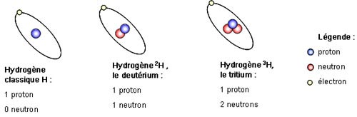
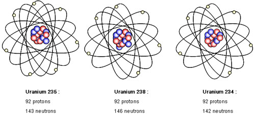

Tableau périodique des éléments
Découvre où se trouvent les éléments radioactifs dans ce tableau et apprend à les connaître en cliquant
dessus
Qu'est ce qu'un isotope?
D'après le dictionnaire
Le dictionnaire nous dit:
Chacun des différents types d'atomes
d'un même élément, différant par leur
nombre de neutrons mais ayant le même nombre de protons et d'électrons, et possédant donc les mêmes
propriétés chimiques.
Larousse
Plus simplement
Chaque atome, visible dans le tableau ci-dessus est en réalité composé d'un noyeaux composés de
protons e
tde neutrons. Autour de celui-ci gravient des électrons. On dit qu'un atome est neutre qu'on il
possède
le même nombre de protons que d'électrons.
Les isotopes sont des atomes qui possèdent le même nombre d'électrons – et donc de protons, pour rester
neutre -, mais un nombre différent de neutrons. On connaît actuellement environ 325 isotopes naturels et
1200 isotopes créés artificiellement.
Les isotopes d’un même élément ont des propriétés chimiques identiques mais des propriétés physiques
différentes (stables ou radioactifs notamment).
Par exemple, l'hydrogène a trois isotopes:

De son côté, l’uranium a 17 isotopes, tous
radioactifs. Ils possèdent tous 92 protons mais ils ont entre
125 et 150 neutrons.
S
eulement trois sont présents naturellement sur Terre et surtout l’un d’eux, à plus de 99% : l’uranium
238.

Si l'isotope d'un élément donné est radioactif, on l’appelle radionucléide ou radio isotope (par exemple
l'uranium 238, l'iode 131...).
Le préfixe « radio » signifie « radioactif ». Le suffixe « nucléide » signifie « noyau »
Construit ton atome
Voici un site amusant qui te permettra de construire ton propre atome. Il te permet aussi d'explorer les
symboles et de faire un jeu.
Consulte le sur: https://phet.colorado.edu/sims/html/build-an-atom/latest/build-an-atom_fr.html